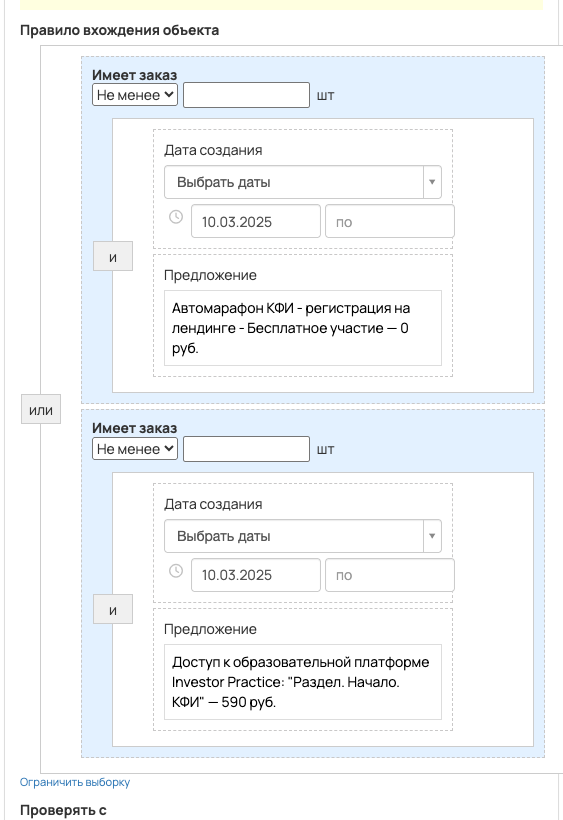
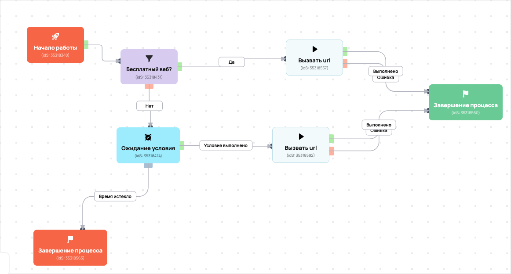

[AMO] КФИ - Передача в АМО регистрации
- ID процесса:
2041426 - Объект: Пользователи
- Статус: Ожидание событий
Описание из GetCourse
30.06.2026. Подробный ход процесса GetCourse:
Главное: В процесс попадают пользователи по правилу: Имеет заказ или Имеет заказ.
Процесс работает с объектом GetCourse: Пользователи. Текущий статус процесса: Ожидание событий.
Как идет процесс внутри GetCourse:
- Схема состоит из 11 блоков и 17 переходов.
Конец подробного хода процесса GetCourse.
База вакас - https://vakas-tools.ru/account/base/amo.php?base_id=73595
26.05.2026 по задаче https://spi.bitrix24.ru/online/?IM_TASK=chat24416&IM_MESSAGE=2117804: добавлена передача комментариев из вебинарной комнаты в amoCRM. Поле GetCourse: у пользователя — webinar_user_comments. В процессах по пользователям передаем как {object.webinar_user_comments}; в процессах по заказам — как {object.user.webinar_user_comments}. В Vakas это приходит в параметр {comments} и записывается через «Шаблон примечания 2»: Комментарии из вебинарной комнаты: {comments}
Понятное описание процесса
- Процесс работает с объектом GetCourse: Пользователи. Текущий статус процесса: Ожидание событий.
- На вход попадают данные так: В процесс попадают пользователи по правилу: Имеет заказ или Имеет заказ.
- Внутри схемы есть дополнительные проверки/ожидания: 2. Основные блоки: «Бесплатный веб?»; «Ожидание условия».
- Дальше процесс делает прямые вызовы Vakas: 2. Напрямую задействованы базы: 73595.
- Передача: 73595. КФИ - Передача в АМО регистрации: Формы и анкеты. Передаются параметры:
name,email,phone,getcourse_user_id,utm_source,utm_medium,utm_campaign,utm_content,utm_term,p1и другие. - Передача: 73595. КФИ - Передача в АМО регистрации: Формы и анкеты. Передаются параметры:
name,email,phone,getcourse_user_id,utm_source,utm_medium,utm_campaign,utm_content,utm_term,p1и другие. - Что происходит в amoCRM: На входе в этап ОТДЕЛ - ДОВЕДЕНИЯ -> РЕГИСТРАЦИИ [71064150] база ищет дубль и при необходимости переводит найденную сделку в рабочий этап.
Ход процесса в GetCourse
- Схема состоит из 11 блоков и 17 переходов.
- По типам: стартов 1, условий/ожиданий 2, вызовов URL 6, изменений полей 0, финалов 2.
Блоки процесса: что делают и зачем нужны:
- Блок
35318340«Начало работы» (старт). Что делает: Запускает выполнение схемы для объекта, который попал под правило входа процесса. Зачем нужен: Нужен как точка входа: от него GetCourse начинает движение объекта по схеме. Дальше: если результат «Выполнено», идет в «Бесплатный веб?». - Блок
35318431«Бесплатный веб?» (условие). Что делает: Проверяет условие: Имеет заказ. Зачем нужен: Нужен, чтобы разделить поток: подходящих пользователей/заказы отправить дальше, неподходящих перевести на другую ветку или завершить. Дальше: если результат «Нет», идет в «Ожидание условия»; если результат «Да», идет в «Вызвать url». - Блок
35318557«Вызвать url» (вызов URL). Что делает: Передает в Vakas: 73595. КФИ - Передача в АМО регистрации, канал «Формы и анкеты» (GET); параметры:name,email,phone,getcourse_user_id,utm_source,utm_medium,utm_campaign,utm_content,utm_term,p1,comments; timeout 300 сек. Зачем нужен: Нужен, чтобы передать подходящий объект в 73595. КФИ - Передача в АМО регистрации; дальше На входе в этап ОТДЕЛ - ДОВЕДЕНИЯ -> РЕГИСТРАЦИИ [71064150] база ищет дубль и при необходимости переводит найденную сделку в рабочий этап. Дальше: если результат «Ошибка», идет в «n8n fail после Вызвать url #35318557»; если результат «Выполнено», идет в «n8n success после Вызвать url #35318557». - Блок
43527772«n8n success после Вызвать url #35318557» (вызов URL). Что делает: Пишет событие в n8n: success, action vakas_users (POST); параметры:event,clientED,gcDomain,action,process_id,process_name,entity_type,object_id,user_id,name,email,phone,error_message; timeout 10 сек. Зачем нужен: Нужен для фиксации успешной отправки: n8n получает событие, что Vakas-вызов отработал без ошибки. Дальше: если результат «Ошибка», идет в «Завершение процесса»; если результат «Выполнено», идет в «Завершение процесса». - Блок
35318560«Завершение процесса» (завершение). Что делает: Завершает ветку процесса после выполненных проверок и действий. Зачем нужен: Нужен, чтобы закрыть текущую ветку и не гонять объект по процессу повторно. Дальше переходов нет: это конечная точка ветки. - Блок
43527775«n8n fail после Вызвать url #35318557» (вызов URL). Что делает: Пишет событие в n8n: fail, action vakas_users (POST); параметры:event,clientED,gcDomain,action,process_id,process_name,entity_type,object_id,user_id,name,email,phone,error_message; timeout 10 сек. Зачем нужен: Нужен для контроля ошибки: n8n получает данные неуспешной отправки, чтобы можно было увидеть проблему и повторить/разобрать передачу. Дальше: если результат «Ошибка», идет в «Бесплатный веб?»; если результат «Выполнено», идет в «Бесплатный веб?». - Блок
35318474«Ожидание условия» (ожидание условия). Что делает: Останавливает объект в ожидании, пока выполнится условие: Имеет заказ. Зачем нужен: Нужен, чтобы не отправлять объект раньше времени: процесс ждет нужное событие, заказ, сегмент или другое условие. Дальше: если результат «Время истекло», идет в «Завершение процесса»; если результат «Условие выполнено», идет в «Вызвать url». - Блок
35318563«Завершение процесса» (завершение). Что делает: Завершает ветку как неуспешную или неподходящую для дальнейшей передачи. Зачем нужен: Нужен, чтобы закрыть текущую ветку и не гонять объект по процессу повторно. Дальше переходов нет: это конечная точка ветки. - Блок
35318592«Вызвать url» (вызов URL). Что делает: Передает в Vakas: 73595. КФИ - Передача в АМО регистрации, канал «Формы и анкеты» (GET); параметры:name,email,phone,getcourse_user_id,utm_source,utm_medium,utm_campaign,utm_content,utm_term,p1,comments; timeout 300 сек. Зачем нужен: Нужен, чтобы передать подходящий объект в 73595. КФИ - Передача в АМО регистрации; дальше На входе в этап ОТДЕЛ - ДОВЕДЕНИЯ -> РЕГИСТРАЦИИ [71064150] база ищет дубль и при необходимости переводит найденную сделку в рабочий этап. Дальше: если результат «Ошибка», идет в «n8n fail после Вызвать url #35318592»; если результат «Выполнено», идет в «n8n success после Вызвать url #35318592». - Блок
43527778«n8n success после Вызвать url #35318592» (вызов URL). Что делает: Пишет событие в n8n: success, action vakas_users (POST); параметры:event,clientED,gcDomain,action,process_id,process_name,entity_type,object_id,user_id,name,email,phone,error_message; timeout 10 сек. Зачем нужен: Нужен для фиксации успешной отправки: n8n получает событие, что Vakas-вызов отработал без ошибки. Дальше: если результат «Ошибка», идет в «Завершение процесса»; если результат «Выполнено», идет в «Завершение процесса». - Блок
43527781«n8n fail после Вызвать url #35318592» (вызов URL). Что делает: Пишет событие в n8n: fail, action vakas_users (POST); параметры:event,clientED,gcDomain,action,process_id,process_name,entity_type,object_id,user_id,name,email,phone,error_message; timeout 10 сек. Зачем нужен: Нужен для контроля ошибки: n8n получает данные неуспешной отправки, чтобы можно было увидеть проблему и повторить/разобрать передачу. Дальше: если результат «Ошибка», идет в «Ожидание условия»; если результат «Выполнено», идет в «Ожидание условия».
Скриншоты процесса


Откуда: процесс берет объекты по правилу входа «Имеет заказ или Имеет заказ».
Что проверяет по пути: перед отправкой в база 73595 (Пользователи и визиты).
Куда ведет: вызывает внешний URL Vakas и передает данные в база 73595 (Пользователи и визиты).
Логика Vakas и amoCRM
- Условие входа в процесс: Имеет заказ или Имеет заказ.
- Вызовов Vakas в схеме:
2. Уникальных URL Vakas:2. Связанных баз:1.
Связанная база Vakas: 73595. КФИ - Передача в АМО регистрации
- Использование в процессе: Формы и анкеты
- Документация базы: 73595. КФИ - Передача в АМО регистрации
- Страница настройки: Vakas
- Поиск дублей: Проверять на дубли
- Искать только в выбранных воронках: 12
- Ответственный по контакту имеет приоритет: Да
Вызовы из процесса
Вызвать url [p1=free_web]
- Endpoint:
sendform - URL вызова:
https://vakas-tools.ru/base/sendform/8927217/73595/?name={object.name}&email={object.email}&phone={object.phone}&getcourse_user_id={object.id}&utm_source={object.create_session.utm_source}&utm_medium={object.create_session.utm_medium}&utm_campaign={object.create_session.utm_campaign}&utm_content={object.create_session.utm_content}&utm_term={object.create_session.utm_term}&p1=free_web&&comments={object.webinar_user_comments} - Связанная база Vakas: 73595. КФИ - Передача в АМО регистрации
Когда срабатывает в процессе
- Сценарий 1:
Начало работы--Выполнено-->Бесплатный веб?--Да-->Вызвать url- условие
Бесплатный веб?: Имеет заказ ->Да
- условие
Что уходит в Vakas
nameemailphonegetcourse_user_idutm_sourceutm_mediumutm_campaignutm_contentutm_termp1comments
Как база обработает вызов и что будет в amoCRM
-
Логика создания сделки: сначала ищется существующая сделка/контакт по правилам базы; если подходящая сделка найдена, обновляется она, иначе создается новая.
-
Режим проверки дублей: Проверять на дубли
-
Искать дубль только в выбранных воронках: 12 шт.
-
Учитывать закрытые этапы при поиске дубля: нет
-
Добавлять телефон/email в найденный контакт: Нет
-
Менять имя контакта при обновлении: Нет <details> <summary>Показать 12 воронок для поиска дублей</summary>
-
ОСНОВНОЙ ОТДЕЛ - ЗАЯВКИ [6777466] -
ПАССИВНЫЙ ДОХОД [9426954] -
КРИПТОКАПИТАЛ [9498394] -
ФИНАНСОВАЯ СВОБОДА [9498398] -
ОД [9839030] -
КРИПТОКЛУБ [9578374] -
ИНВЕСТ КЛУБ [9500418] -
ОТДЕЛ КЛУБОВ [6869966] -
АПСЕЙЛЫ ОП [8910882] -
ОТДЕЛ ДИАГНОСТИК [6844390] -
ЛИДОРУБЫ [9212986] -
ДИАГНОСТЫ [9213518]
</details>
- Автоотправка регистраций в amoCRM: Да
- Базовый этап: ОТДЕЛ - ДОВЕДЕНИЯ -> РЕГИСТРАЦИИ [71064150]
- Этапы, из которых разрешен сдвиг: не ограничено
- Менять название сделки при обновлении: Нет
- Менять имя контакта при обновлении: Нет
- Ответственный по умолчанию: EasyDrafting[12985298]
- Всегда менять ответственного: Нет
- Теги сделки: не заданы
- Индивидуальные правила маршрутизации: 2 шт.
- если поле
param1 с бизонсодержитfree_web, то сделка идет в этапОТДЕЛ - ДОВЕДЕНИЯ -> РЕГИСТРАЦИИ[71064150] - если поле
param1 с бизонсодержитpay_web, то сделка идет в этапОТДЕЛ - ДОВЕДЕНИЯ -> РЕГИСТРАЦИИ[71064150]
Вызвать url [p1=pay_web]
- Endpoint:
sendform - URL вызова:
https://vakas-tools.ru/base/sendform/8927217/73595/?name={object.name}&email={object.email}&phone={object.phone}&getcourse_user_id={object.id}&utm_source={object.create_session.utm_source}&utm_medium={object.create_session.utm_medium}&utm_campaign={object.create_session.utm_campaign}&utm_content={object.create_session.utm_content}&utm_term={object.create_session.utm_term}&p1=pay_web&&comments={object.webinar_user_comments} - Связанная база Vakas: 73595. КФИ - Передача в АМО регистрации
Когда срабатывает в процессе
- Сценарий 1:
Начало работы--Выполнено-->Бесплатный веб?--Нет-->Ожидание условия--Условие выполнено-->Вызвать url- условие
Бесплатный веб?: Имеет заказ ->Нет - ожидание
Ожидание условия: Имеет заказ ->Условие выполнено
- условие
Что уходит в Vakas
nameemailphonegetcourse_user_idutm_sourceutm_mediumutm_campaignutm_contentutm_termp1comments
Как база обработает вызов и что будет в amoCRM
-
Логика создания сделки: сначала ищется существующая сделка/контакт по правилам базы; если подходящая сделка найдена, обновляется она, иначе создается новая.
-
Режим проверки дублей: Проверять на дубли
-
Искать дубль только в выбранных воронках: 12 шт.
-
Учитывать закрытые этапы при поиске дубля: нет
-
Добавлять телефон/email в найденный контакт: Нет
-
Менять имя контакта при обновлении: Нет <details> <summary>Показать 12 воронок для поиска дублей</summary>
-
ОСНОВНОЙ ОТДЕЛ - ЗАЯВКИ [6777466] -
ПАССИВНЫЙ ДОХОД [9426954] -
КРИПТОКАПИТАЛ [9498394] -
ФИНАНСОВАЯ СВОБОДА [9498398] -
ОД [9839030] -
КРИПТОКЛУБ [9578374] -
ИНВЕСТ КЛУБ [9500418] -
ОТДЕЛ КЛУБОВ [6869966] -
АПСЕЙЛЫ ОП [8910882] -
ОТДЕЛ ДИАГНОСТИК [6844390] -
ЛИДОРУБЫ [9212986] -
ДИАГНОСТЫ [9213518]
</details>
- Автоотправка регистраций в amoCRM: Да
- Базовый этап: ОТДЕЛ - ДОВЕДЕНИЯ -> РЕГИСТРАЦИИ [71064150]
- Этапы, из которых разрешен сдвиг: не ограничено
- Менять название сделки при обновлении: Нет
- Менять имя контакта при обновлении: Нет
- Ответственный по умолчанию: EasyDrafting[12985298]
- Всегда менять ответственного: Нет
- Теги сделки: не заданы
- Индивидуальные правила маршрутизации: 2 шт.
- если поле
param1 с бизонсодержитfree_web, то сделка идет в этапОТДЕЛ - ДОВЕДЕНИЯ -> РЕГИСТРАЦИИ[71064150] - если поле
param1 с бизонсодержитpay_web, то сделка идет в этапОТДЕЛ - ДОВЕДЕНИЯ -> РЕГИСТРАЦИИ[71064150]